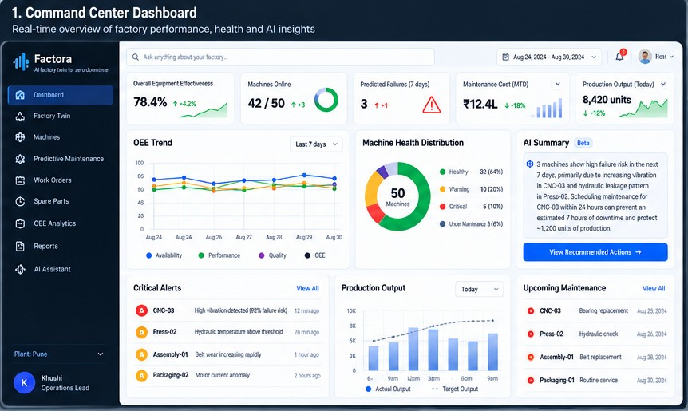
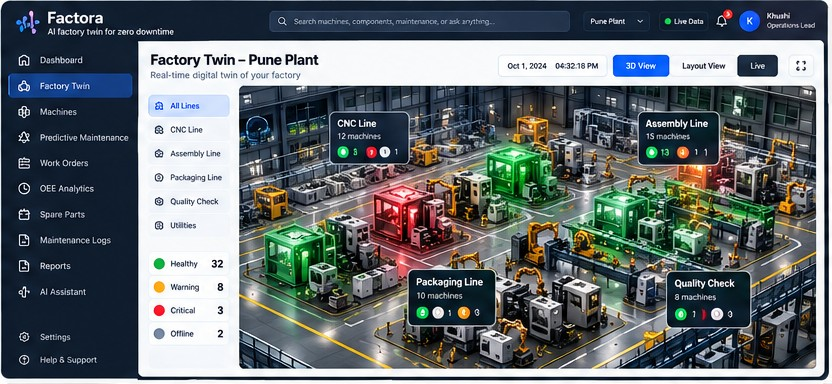
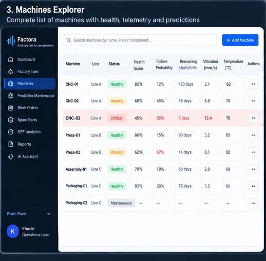
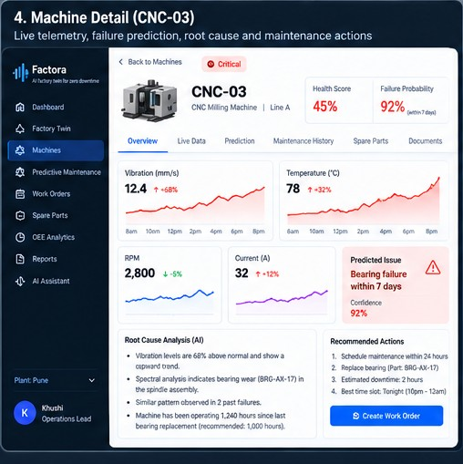
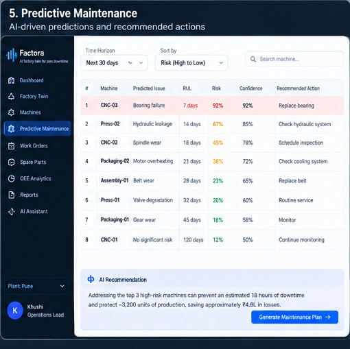
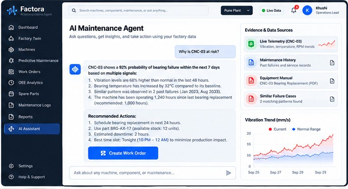
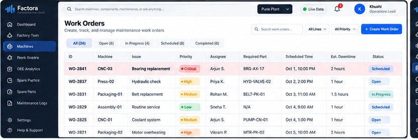
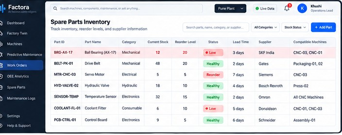
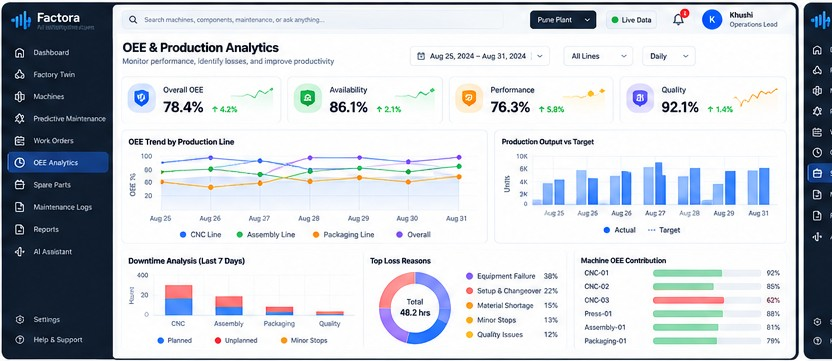
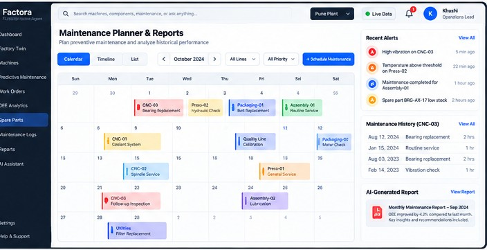

The ten screens from the Beginner Build Playbook (§2 UI/UX Blueprint, pages 4–10), extracted at original resolution into this folder. Build the UI to match these, not to a reinterpretation of them.

Top KPIs, OEE trend, machine health distribution, AI summary, critical alerts, production output, upcoming maintenance.

The visual centrepiece. Machines and production lines change state: healthy, warning, critical, maintenance/offline.

Sortable list of machines with health score, failure probability, RUL, vibration, temperature and actions.

Live telemetry, prediction, root-cause evidence, maintenance history, parts and Create Work Order action.

Rank machines by failure risk/RUL and show recommended preventive actions.

Natural-language investigation with citations/evidence from telemetry, maintenance history and knowledge base.

Create, assign, schedule and track maintenance actions generated by Factora.

Stock, reorder level, supplier, lead time and compatible machines.

Availability, performance, quality, OEE, output vs target and downtime causes.

Calendar view, recent alerts, maintenance history and AI-generated report.